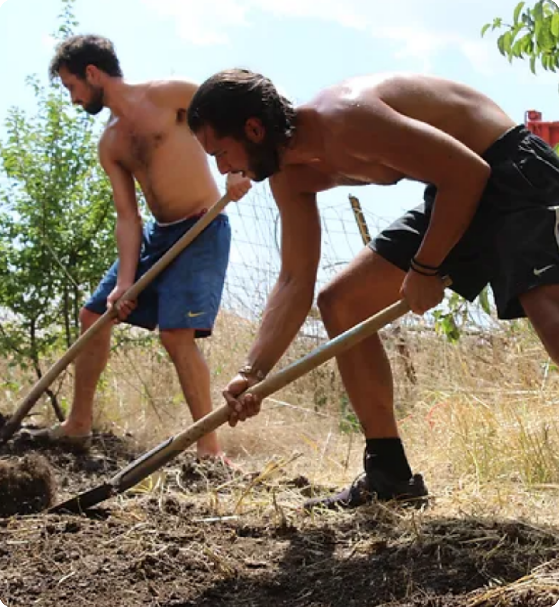

La ferme Casalina se situe au milieu des champs, à 5 km de Spinazzola, une petite cité touchée par le dépeuplement mais dont la tradition et l’esprit pugliese sont encore intactes. Elle est composée d’une petite maison et d’un beau jardin ombragé par les cerisiers.
Casalina
C’est le projet d’agriculture sociale lancé par le Collectif BSR dans les Pouilles, au sud de l’Italie. Le projet a débuté en Juillet 2018 avec la rénovation d’une ferme dans le but de créer un lieu de rencontre entre les populations locales, les travailleurs saisonniers venus majoritairement d’Afrique et les bénévoles bruxellois ou internationaux. Par la suite, c’est sous forme de missions périodiques et grâce au soutien d’habitants du village que le projet poursuit ses objectifs:
- de solidarité auprès des populations migrantes
- de recherche pour une agriculture durable et respectueuse
- d’échanges culturels et de savoirs-faire
La ferme Casalina
Dans sa partie nord, se trouvent une pinède parfaite pour y camper, un espace aménagé pour nos longs barbecues et plusieurs bâtiments en ruines qui étaient à l’origine une cimenterie. Sur les coteaux de la colline d’en face, on y devine l’oliveraie. Et entre les deux se trouvent les quelques hectares de terrains agricoles cultivés depuis longtemps pour son blé.
Aujourd’hui, c’est près d’1Ha qui est utilisé par l’association pour les projets permacoles. Rapidement les expériences de vie en collectivité au milieu de la nature nous ont donné envie de veiller aux ressources et de développer des systèmes durables : douche solaire, compost, toilettes sèches, machine à laver-Vélo, murs en torchis, revalorisation des eaux usées, rocket stove,... Les participants continuent à s’informer sur les low-tech, l’éco-construction et autres alternatives écologiques.
Campagna e vita

El Caporalato

Le secteur agricole est l'un des principaux moteurs de développement du sud de l'Italie, capable de générer des emplois et donc d'attirer des dizaines de milliers de travailleurs saisonniers.
Une grande partie de la production nationale d’agrumes, d’huiles, de céréales, de vin, de blé et des fruits et légumes est issue des régions du sud. De la Sicile jusqu’aux Pouilles, les travailleurs migrants se déplacent tout au long de l'année de région en région pour participer à la récolte des fruits et légumes de saison.

Pour faire le lien entre les exploitants agricoles et la main d'œuvre disponible, il n’existe pas
d’organisme
légal efficace. C’est principalement ce manquement qui a fait naître un système illégal et criminel:
LE
CAPORALATO.
Ce phénomène est particulièrement répandu dans le sud de l’Italie afin de profiter de la présence de main-d'œuvre immigrée. Ce phénomène est particulièrement répandu dans le sud de l’Italie afin de profiter de la présence de main-d'œuvre immigrée. L’Italie étant la porte d'entrée de l'Union européenne pour de nombreuses populations, les migrants s'y retrouvent souvent bloqués pendant plusieurs années en attente d’un permis de séjour ou de travail. Le Caporalato profite de cette situation pour exploiter ces travailleurs migrants et imposer des conditions inhumaines.
Ce phénomène est particulièrement répandu dans le sud de l’Italie afin de profiter de la présence de main-d'œuvre immigrée. Ce phénomène est particulièrement répandu dans le sud de l’Italie afin de profiter de la présence de main-d'œuvre immigrée. L’Italie étant la porte d'entrée de l'Union européenne pour de nombreuses populations, les migrants s'y retrouvent souvent bloqués pendant plusieurs années en attente d’un permis de séjour ou de travail. Le Caporalato profite de cette situation pour exploiter ces travailleurs migrants et imposer des conditions inhumaines.